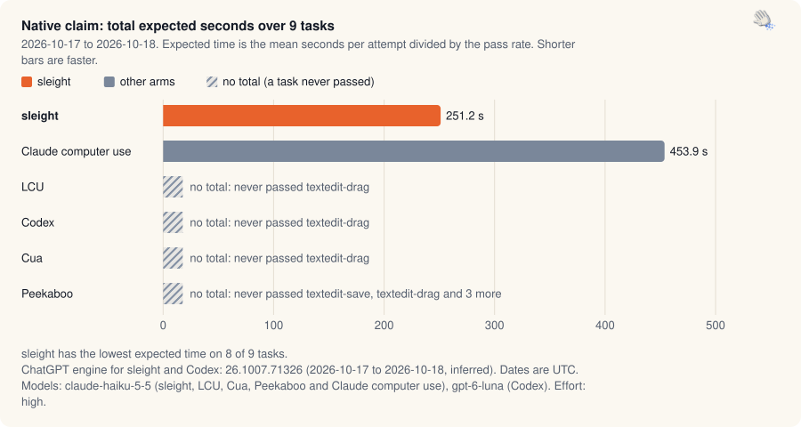
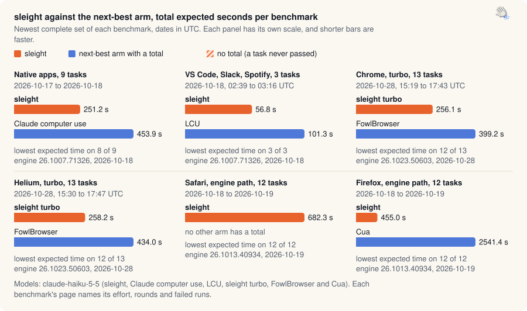

sleight benchmarks
Each run, failures included. An arm is one agent setup, such as sleight or a competing plugin.


Results by family
| Family | What it measures | Where it stands | Data |
|---|---|---|---|
| Native claim | The 9 native Mac app tasks, sleight against LCU, Codex, Cua, Peekaboo and Claude's own computer use. | Lowest expected time on 8 of 9 tasks. Total 251.2 s. | JSON |
| App claim | VS Code, Slack and Spotify tasks with the same arms. | Lowest expected time on 3 of 3 tasks. Total 56.8 s. | JSON |
| Chrome and Helium: turbo against FowlBrowser | Turbo in Chrome and Helium, in the real-window race and the earlier gate rounds. | Chrome: lowest expected time on 12 of 13 tasks, total 296.8 s. Helium: lowest expected time on 10 of 13 tasks, total 264.1 s. | JSON |
| Safari and Firefox: the engine path against Codex, LCU, Cua and Peekaboo | sleight's engine path in Safari and Firefox against Codex, LCU, Cua and Peekaboo. | Safari: sleight has completed every task and is fastest on 12 of 12 tasks. It is the only arm with a total (682.3 s). Firefox: sleight has completed every task and is fastest on 12 of 12 tasks. Its total is 455.0 s. | JSON |
| Experiments | sleight against sleight, for skill, wording, tool and turbo changes. | 17 studies with run data. The catalog has 96 benchmark write-ups and includes studies without structured run data. | JSON |
| Validation: build A against build B | sleight against its own earlier build on the same tasks, from the validation and re-measure banks. | 1 scored bank: 1 validation, 0 re-measure. 6 more have no score file. 21 A/B groups in all. Build B has a higher expected time or a lower pass rate than build A on 37 of 72 task comparisons. Newest scored bank: validation-140-final (2026-10-20). | JSON |
| Release passes and the earlier head-to-heads | The per-release regression passes and the first native head-to-heads. | 7 release passes (2026-10-05 to 2026-10-09), 115 results files in all. | JSON |